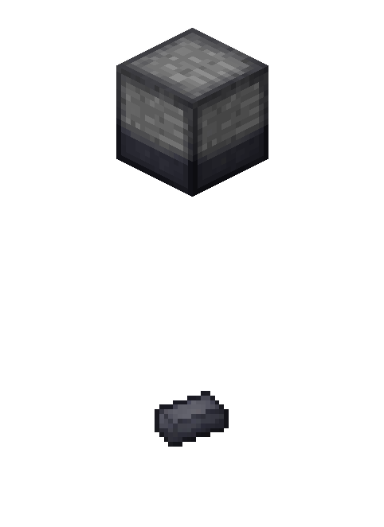
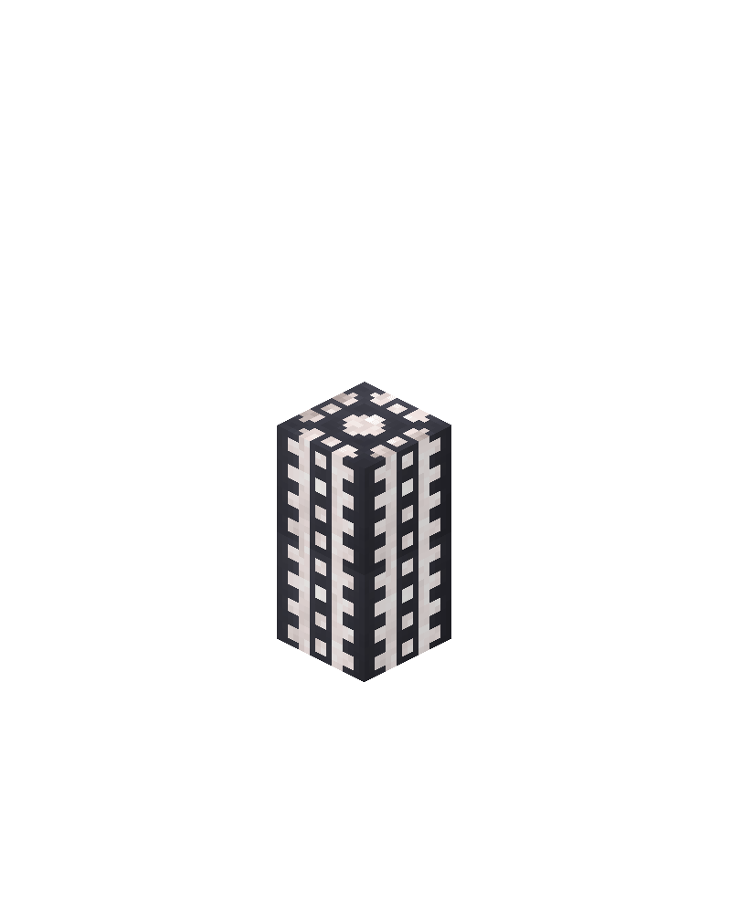

Mod created in colaboration with al132mc Download this at curseforge.
This mod adds some crafting mechanics to spice up modpacks.
By itself, this mod adds almost nothing to the game, and must be configured to add recipes.
Most recipes are available through CraftTweaker.
Crushing Block
The Crushing Block can be dropped on top of blocks to crush them.
Example usage:
mods.mechanics.addCrushingBlockRecipe(
[<minecraft:iron_ingot>] // item that is crushed
[<minecraft:gold_ingot> , <minecraft:diamond>], // possible resulting items
[0.75, 0.25] // probabilities of each possible result
);

Alloying Furnace
The Alloy furnace requires fuel to transform two items into a third. The order does not matter.
Example usage:
mods.mechanics.addAlloyFurnaceRecipe(
<minecraft:iron_ingot>, // one input item
<minecraft:gold_ingot>, // other input item
<minecraft:diamond> // resulting item
);
Transforming Items with the Nether Portal
Throw items into the Nether Portal and they come out transformed!
Example usage:
mods.mechanics.addNetherPortalRecipe(
<minecraft:iron_ingot>, // item thrown in
<minecraft:gold_ingot> // item that comes out
);
Drying Table
Similar to Drying Racks from Tinker's and Primal Core. Time will transform an item stack into another.
Example usage:
mods.mechanics.addDryingTableRecipe(
<minecraft:rotten_flesh>, // item placed
<minecraft:leather> // final dried item
);
Martlets
Martlets to crack drown blocks. Comes with 3 recipes (Stone to Cobblestone, Cobblestone to Gravel and Gravel to Sand) and two varieties, stone and iron.
Example usage:
mods.mechanics.addMartletRecipe(
<minecraft:sandstone:0>, // block broken by a Martlet
<minecraft:sand:0> // resulting item that drops
);
Amplifying Tube
The Amplifying Tube can transform blocks in world into other blocks or into liquids.
Simply place two to eight amplifying tubes vertically, and the block immediately beneath them will transform!
Example usage:
mods.mechanics.addTubeRecipe(
<minecraft:leaves:0>, // block placed on the bottom
<liquid:water> // resulting liquid
);

Burst Seeds
Burst Seeds are tiny blocks that, after some random amount of time, will burst into a bunch of copies of a resource.
Burst Seeds, unfortunately, do not use CraftTweaker. Instead, you need to create a file called "mechanics_burst_seeds.txt" in your scripts folder.
Inside, you can add or remove burst seeds, one per line.
There are three ways of creating burst seeds (without the quotes):
"burst seed registry name" "block or item registry name" "block or item metadata"
"burst seed registry name" "block or item registry name" "block or item metadata" "any texture"
"burst seed registry name" "block or item registry name" "block or item metadata" "minimum number" "maximum number" "any texture"
Add a recipe for the Alloy Furnace.
mods.mechanics.addAlloyFurnaceRecipe(IIngredient, IIngredient, IItemStack)
Add a recipe for the Crushing Block. The number of probabilities must be the same as the number of outputs. If the sum of the probabilities isn't 1, there is a chance for an output of nothing.
mods.mechanics.addCrushingBlockRecipe(IItemStack[], IItemStack[], double[])
Add a recipe for the Crushing Block. The number of probabilities must be the same as the number of outputs. If the sum of the probabilities isn't 1, there is a chance for an output of nothing.
mods.mechanics.addCrushingBlockRecipe(IItemStack, IItemStack[], double[])
Add a recipe for the Drying Table.
mods.mechanics.addDryingTableRecipe(IIngredient, IItemStack)
Add a recipe for the Drying Table specifying the time in ticks.
mods.mechanics.addDryingTableRecipe(IIngredient, IItemStack, int)
Add a recipe for the Martlet.
mods.mechanics.addMartletRecipe(IIngredient, IItemStack)
Add a new transformation recipe through the nether portal. It is not possible to change the number of items this way. 1 to 1 transformations only.
mods.mechanics.addNetherPortalRecipe(IItemStack, IItemStack)
Add a recipe for the Tube with a solid block output.
mods.mechanics.addTubeRecipe(IItemStack, IItemStack)
Add a recipe for the Tube with a solid block output.
mods.mechanics.addTubeRecipe(IItemStack[], IItemStack)
Add a recipe for the Tube with a liquid output.
mods.mechanics.addTubeRecipe(IItemStack, ILiquidStack)
Add a recipe for the Tube with a liquid output.
mods.mechanics.addTubeRecipe(IItemStack[], ILiquidStack)
Remove a recipe for the Crushing Block.
mods.mechanics.removeCrushingBlockRecipe(IItemStack)
Remove a recipe for the Martlet.
mods.mechanics.removeMartletRecipe(IIngredient)
Remove a nether portal transformation recipe.
mods.mechanics.removeNetherPortalRecipe(IItemStack)
Remove a recipe for the Tube.
mods.mechanics.removeTubeRecipe(IItemStack)